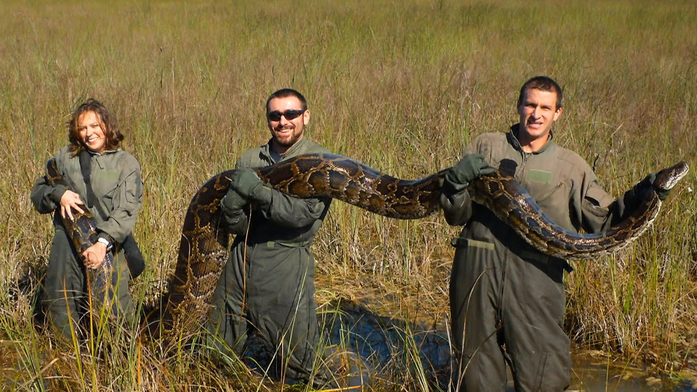

La primera pitón birmana encontrada en los Everglades en 1979 probablemente fue una mascota liberada o que escapó al medio silvestre. Hoy, después de años de reproducción, decenas de miles de estas serpientes habitan el territorio continental alrededor del Parque Nacional Everglades, alimentándose de especies raras y en peligro de extinción.
Por qué Florida necesita Python Patrol
Aunque no se sabe que las pitones ataquen a las personas, son depredadores indiscriminados. Se ha documentado que comen una amplia variedad de fauna, desde pequeños pájaros cantores hasta venados adultos e incluso caimanes de hasta 6 pies de largo.
Encontrar una pitón invasora en estado silvestre es difícil, por lo que se necesita un ejército de voluntarios y profesionales capacitados para reportar y/o responder a encuentros con pitones.
Uno de los problemas con la pitón birmana es que es una especie invasora que interfiere con el funcionamiento natural del ecosistema del área. Por eso estamos tratando de eliminarla.
La primera pitón en los Cayos fue descubierta en 2007. Cuando investigadores revisaron el estado de una rata de bosque de Key Largo macho que llevaba un transmisor de radio, descubrieron que se había desplazado más de una milla de su hábitat documentado originalmente. La señal condujo a los investigadores a una pitón birmana de 7 pies y medio cuyo contenido estomacal incluía dos ratas marcadas con collar.
The Nature Conservancy Florida lanzó Python Patrol en los Cayos de Florida en 2008 y, con la ayuda del Parque Nacional Everglades, amplió el esfuerzo al territorio continental en 2010. Cualquiera de los más de 400 respondedores capacitados por la organización puede capturar y retirar de manera segura y humanitaria pitones u otras serpientes constrictoras exóticas que encuentren.
Los ciudadanos pueden aprender más sobre las pitones en la Comisión de Conservación de Pesca y Vida Silvestre de Florida (FWC). Actualmente, la FWC coordina Python Patrol.
“Animamos a cualquier persona que vea una pitón u otro animal no nativo a tomar una foto desde una distancia segura y reportarlo a la línea gratuita”, dijo Cheryl Millett, la bióloga de la organización que transfirió Python Patrol a la FWC en 2013.
“La detección temprana y respuesta rápida es la mejor manera de evitar que se propaguen”, dijo Millett. “Incluso si la idea de ponerle las manos a una pitón te da escalofríos, puedes ser parte de la solución aprendiendo a identificarlas, reportándolas y ayudándonos a retirarlas”.
Datos sobre pitones birmanas de FWC
- La pitón birmana puede alcanzar una longitud de 26 pies y un peso de más de 200 libras.
- El tamaño promedio de una pitón birmana eliminada en Florida es de 8 a 10 pies.
- El área de distribución nativa de la pitón birmana se extiende desde India hasta el sur de China, a lo largo de la península malaya y en algunas islas de las Indias Orientales. Estas pitones suelen vivir cerca del agua.
- Una hembra puede poner entre 50 y 100 huevos y enrolla su cuerpo alrededor de ellos para mantenerlos calientes y defenderlos de depredadores. Puede aumentar su temperatura corporal contrayendo rítmicamente sus músculos, lo que genera calor y ayuda a incubar los huevos. Este proceso puede durar de dos a tres meses. Una vez que eclosionan, las crías deben sobrevivir por sí solas.
- Existe un bajo riesgo de ataque a humanos por parte de una pitón birmana. Los ataques documentados en Estados Unidos involucran serpientes en cautiverio y a sus dueños o familiares directos.
- Las crías miden 18 pulgadas al nacer y la pitón adulta más larga capturada en el sur de Florida midió 18 pies y 8 pulgadas.
- Recientemente se capturó y retiró una pitón birmana de 17 pies en la Reserva Nacional Big Cypress en los Everglades de Florida, la más grande capturada allí. Pesó 140 libras y fueron necesarias cuatro personas para cargarla. Esta historia recibió atención nacional y fue presentada en el New York Times.
Las pitones birmanas son rápidas y lentas
Las pitones birmanas son depredadores de emboscada con gran camuflaje. Pasan mucho tiempo escondidas al acecho y luego gastan mucha energía en un breve estallido para sorprender y capturar a su presa. Los respondedores de Python Patrol pueden aprovechar su falta de resistencia para facilitar la captura.
Durante la capacitación, se enseña a los respondedores a tirar repetidamente de la cola de una pitón que intenta escapar para que gaste energía. Cuando la serpiente está cansada, se sujeta la base de la cabeza para evitar enredarse con ella. Las pitones capturadas en estado silvestre se colocan de forma segura en bolsas, cajas, se etiquetan y se entregan a un destinatario designado para investigación o capacitación.
Recuerda: Siempre llama a un respondedor capacitado y NUNCA intentes esto en casa.
Puedes ayudar a prevenir especies invasoras
La organización ha pedido durante mucho tiempo un enfoque más preventivo y proactivo para abordar la amenaza de las especies invasoras.
“En este momento, las especies importadas son inocentes hasta que se demuestre lo contrario”, dice Kris Serbesoff-King, directora de ciencia y planificación de la organización. “ Como nación, debemos enfocarnos en la evaluación previa a la importación; es decir, analizar qué especies de vida silvestre no nativas importadas, aunque sean pocas, podrían resultar dañinas para las tierras y aguas que estamos trabajando por proteger”.
¿Qué puedes hacer?
- Familiarízate con la diferencia entre reptiles invasores y nativos. Explora esta Guía de Identificación de Reptiles No Nativos del Sur de Florida de la Extensión IFAS de la Universidad de Florida.
- o en las aplicaciones gratuitas “IveGot1” para iPhone o Android, desarrolladas por la Universidad de Georgia.
- Ayúdanos a continuar nuestro trabajo de conservación en Florida.